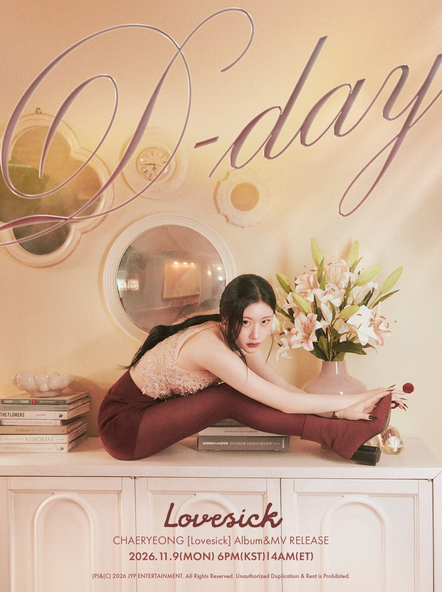
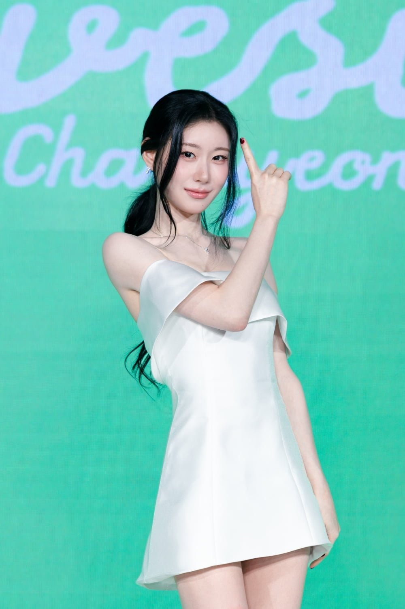
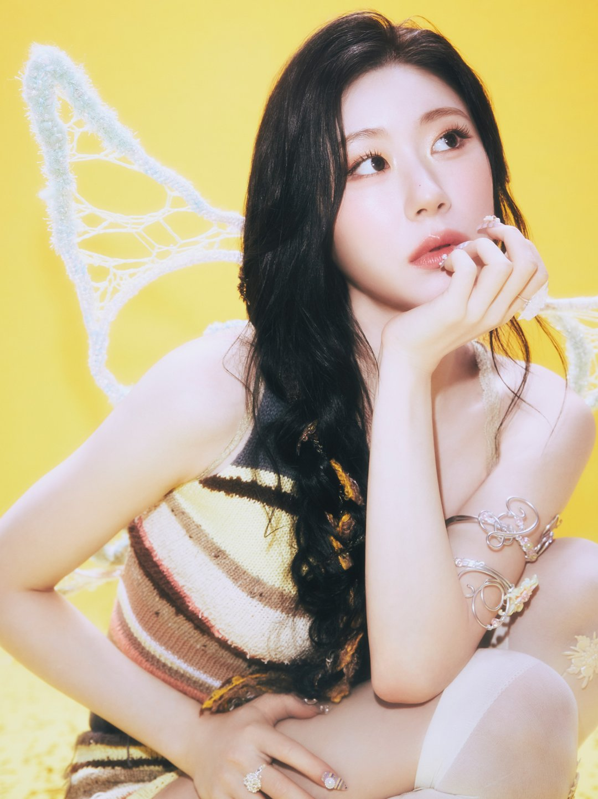
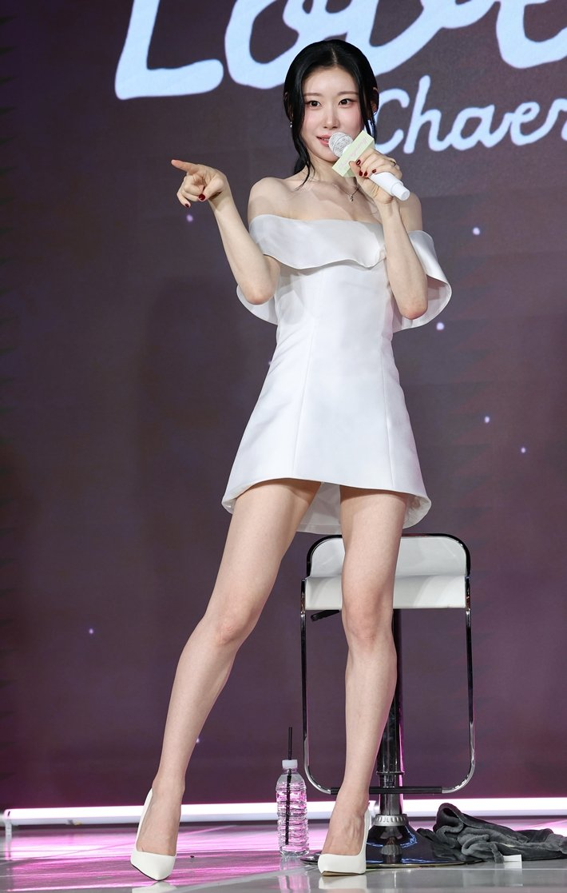
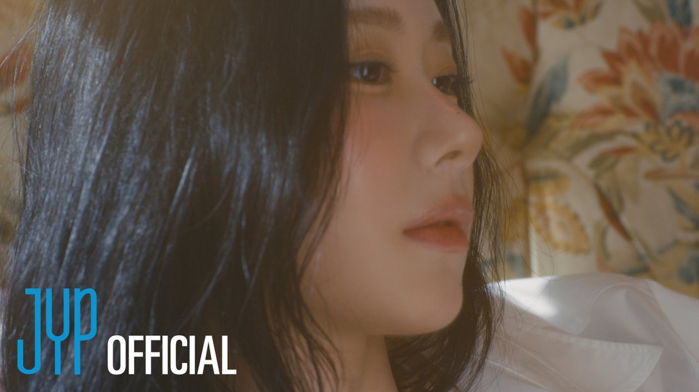
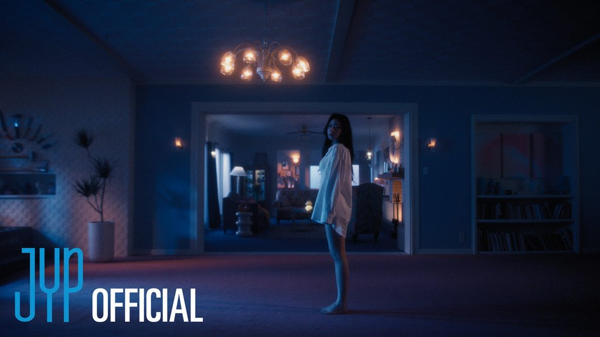
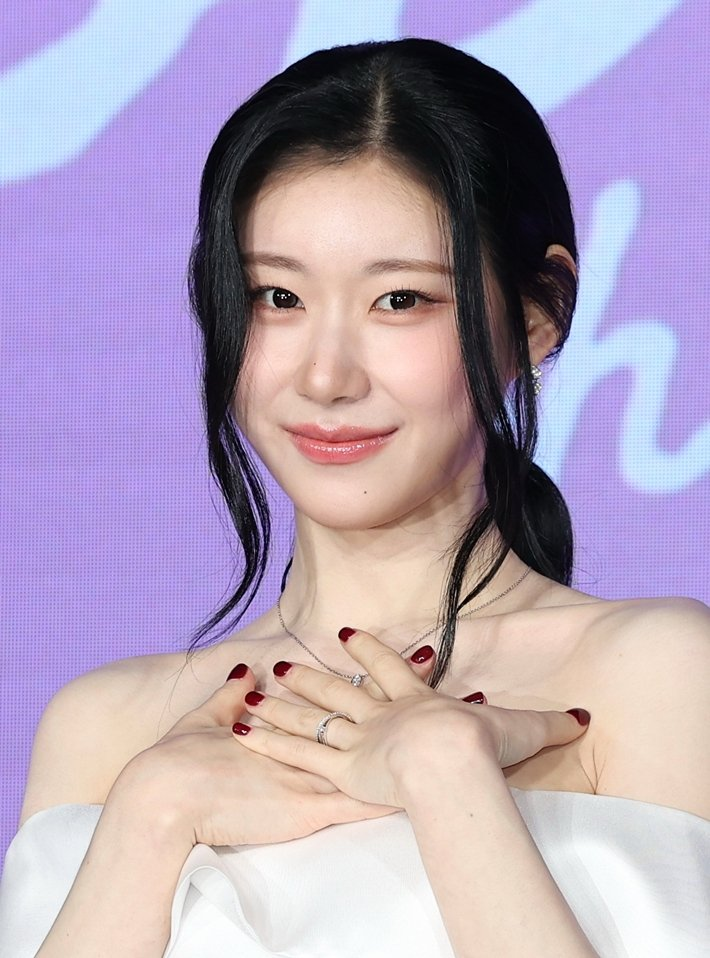
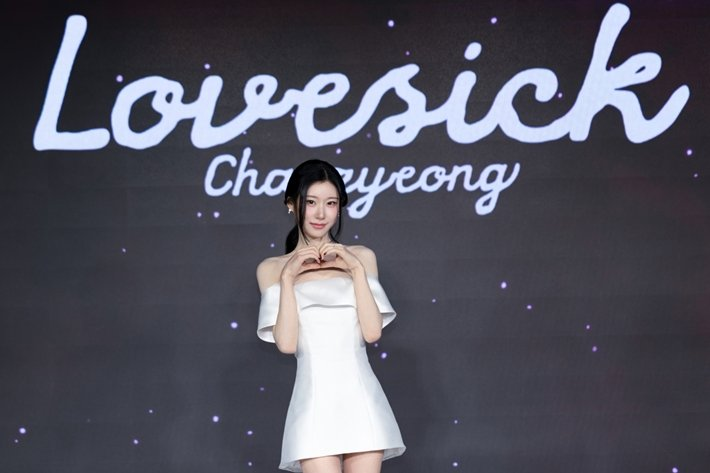
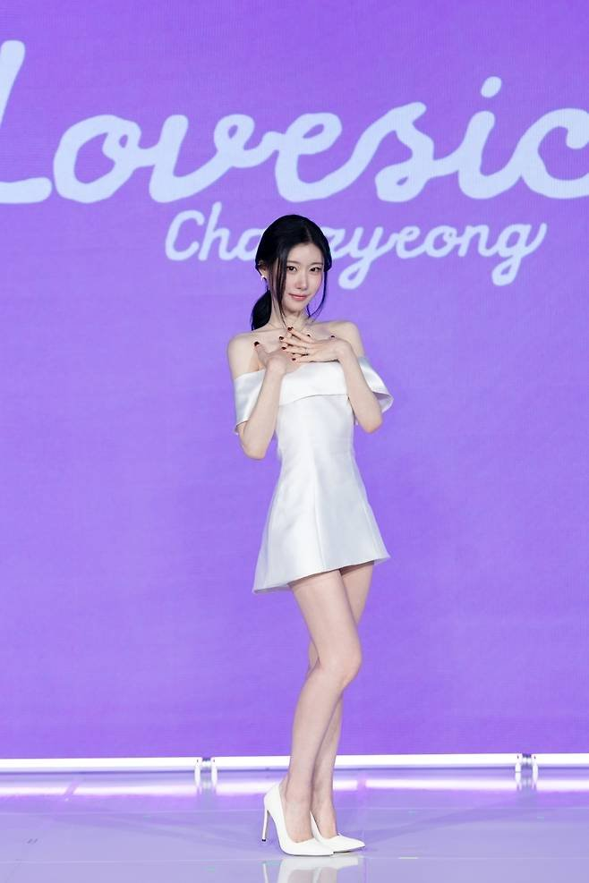

7년 9개월. ITZY 채령이 첫 솔로곡 'Lovesick'을 내놓기까지 걸린 시간이에요. 쇼케이스에서 채령이 여러 번 꺼낸 말은 '그동안 참았던 것'이었어요. 팀일 때와 무엇이 달라졌는지 본인 말로 정리했어요.
📷 사진 1 자리
▲ 채령 첫 솔로 앨범 'Lovesick' 발매일 포스터 · 사진=JYP엔터테인먼트 제공
예지, 유나 다음 세 번째 타자
채령은 11월 9일 오후 6시 'Lovesick' 음원과 뮤직비디오를 공개하며 솔로 데뷔했어요. 같은 날 오후 쇼케이스에서 스스로를 'ITZY의 3번 타자'라고 불렀어요. 예지와 유나에 이어 세 번째로 솔로에 나선 멤버라는 뜻이에요.
📷 사진 2 자리
▲ 11월 9일 솔로 데뷔 쇼케이스에 선 채령 · 사진=JYP엔터테인먼트 제공
데뷔 7년 9개월 만이라는 숫자에 대해서는 조바심이 없었다고 했어요. 지금이 가장 적절한 때였고, 늦었다고 생각하지 않는다는 답이었죠.
📷 사진 3 자리
▲ 'Lovesick' 콘셉트 사진 · 사진=JYP엔터테인먼트 제공
팀에서 참았던 '쪼', 깃털 춤선으로
달라진 점의 중심은 춤이에요. 채령은 ITZY 무대에서는 자기만의 춤 습관, 이른바 '쪼'를 눌러 왔다고 털어놨어요. 다섯 명이 함께 맞추는 팀 무대에서는 자기 버릇을 앞세우지 않았다는 얘기예요.
📷 사진 4 자리
▲ 쇼케이스 무대에서 포즈를 취한 채령 · 사진=JYP엔터테인먼트 제공
이번 곡에서는 그걸 풀었어요. 포인트로 내세운 건 '깃털 춤선'이에요. 고개를 꺾고 머리를 넘기는 동작이 많아 담이 온 적도 있대요. 7년 넘게 눌러 둔 자기 스타일을 이번에 처음 꺼냈다는 점이 이번 데뷔의 핵심이에요.
▶ 영상 1 자리
구미호처럼 홀리기, 섹시함은 조금만
콘셉트를 묻는 질문에는 '구미호처럼 사람을 홀리는 가수'가 되고 싶다고 답했어요. 겉으로는 싱그럽고 사랑스러운데 그 안에 섹시함을 숨겨 뒀다는 설명이에요.
📷 사진 5 자리
▲ 'Lovesick' 뮤직비디오 티저 속 채령 · 사진=JYP 제공
섹시함을 노렸느냐는 질문은 피하지 않았어요. "노리지 않았다면 거짓말"이라고 인정하면서, 다음 활동을 위해 일부러 조금 아껴 뒀다고 덧붙였죠. 한 번에 다 보여 주지 않겠다는 말이라, 이번 곡은 솔로 채령의 첫 장으로 읽혀요.
📷 사진 6 자리
▲ 'Lovesick' 뮤직비디오 티저 장면 · 사진=JYP 제공
언니 이채연의 조언, 박진영이라는 기준
준비 과정에서는 가수인 친언니 이채연이 조언과 응원을 많이 해 줬다고 했어요. 할 말은 똑 부러지게 하라는 이야기였대요. 두 사람은 JYP에서 함께 연습생 생활을 했고, 같은 날 공개된 유병재 유튜브 채널 영상에서는 그 시절 다툰 뒤 지하철 칸을 따로 탄 적도 있다고 말했어요.
📷 사진 7 자리
▲ 솔로 데뷔 쇼케이스의 채령 · 사진=JYP엔터테인먼트 제공
박진영 프로듀서 이야기가 나오자 존경스럽다면서도 "못 넘을 것 같다"고 했어요. 그만큼 열심히 살 자신이 있을지 모르겠다는 이유였죠. 성적 욕심은 숨기지 않았어요. 음원 차트에 꼭 들어서 두 번째 솔로 기회를 얻고 싶다고 했고, 뮤직비디오를 매일 봐 달라는 부탁도 남겼어요.
📷 사진 8 자리
▲ 'Lovesick' 쇼케이스 포토타임 · 사진=JYP엔터테인먼트 제공
'Lovesick', 이런 분께 먼저
'Lovesick'은 채령의 첫 솔로 앨범이자 같은 이름의 타이틀곡이에요. 그룹 활동 7년 9개월 만에 혼자 서는 무대라 채령 개인의 색을 처음 확인할 수 있는 곡이에요.
📷 사진 9 자리
▲ 'Lovesick' 쇼케이스 무대에 선 채령 · 사진=JYP엔터테인먼트 제공
볼거리는 단연 안무예요. 본인이 직접 꼽은 깃털 춤선과 고개를 꺾는 동작이 뮤직비디오와 무대에서 어떻게 나오는지 보면 '참았던 쪼'가 무슨 뜻인지 바로 알 수 있어요.
ITZY 무대에서 채령의 춤 파트를 눈여겨봤던 분, 싱그러운 콘셉트 안에 반전이 있는 걸그룹 솔로를 좋아하는 분께 먼저 권해요.
쇼케이스 발언을 모아 보니 '참았다'와 '아껴 뒀다'라는 말이 동시에 나온 게 가장 눈에 띄었어요. 팀에서 눌러 온 건 이번에 풀고, 솔로로 보여 줄 것 중 일부는 다음으로 미뤄 둔 셈이라 첫 솔로를 끝이 아닌 시작으로 설계한 것처럼 보여요. 뮤직비디오를 볼 때는 노래보다 춤 동작부터 따라가 보길 권해요.
✍️ 직접 보거나 들은 경험이 있으면 위 문단에 한두 줄 덧붙이세요 (이 안내 줄은 지우기)
'Lovesick'에서 달라진 건 팀에서 참았던 춤선을 풀었다는 것, 그리고 구미호처럼 홀리겠다는 콘셉트예요. 음원은 11월 9일 오후 6시 공개됐고, 뮤직비디오는 JYP Entertainment 유튜브 채널에서 볼 수 있어요.








